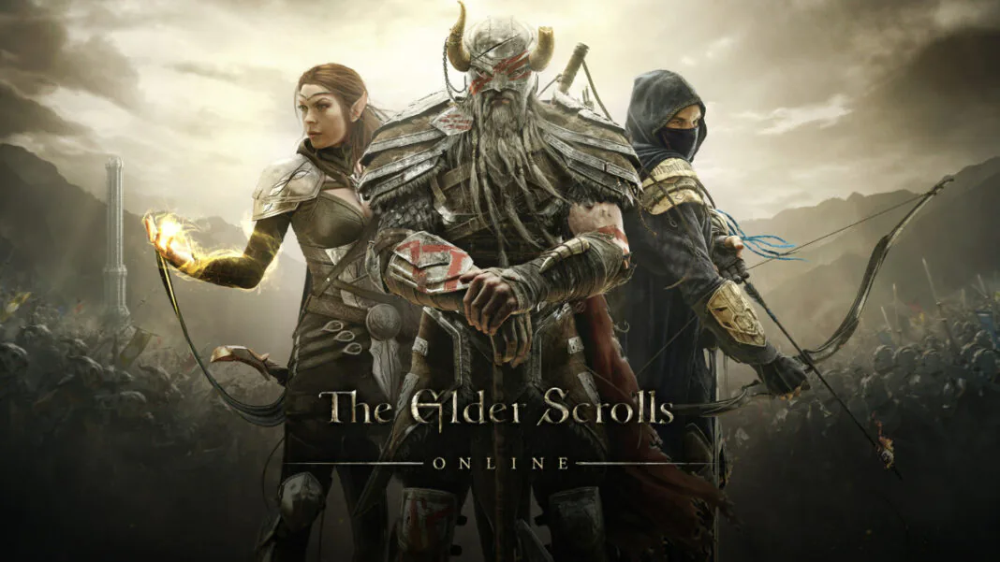
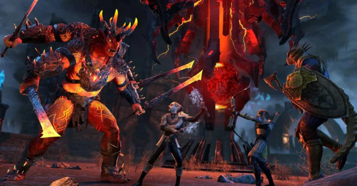

Состоялась премьера дополнения Waking Flame для The Elder Scrolls Online
Компания Bethesda Softworks рассказала о премьере дополнения Waking Flame для многопользовательской ролевой игры The Elder Scrolls Online. Дополнение уже доступно для всех игроков на ПК и Mac, а 8 сентября оно будет выпущено для Xbox Series X|S, Xbox One, PlayStation 4 и PlayStation 5 и войдёт в библиотеку Xbox Game Pass.
После The Elder Scrolls Online: Blackwood события успокоились, однако заговор Мерунеса Дагона всё ещё приносит свои плоды: могущество Князя Разрушения растёт, и теперь игроков ждут подземелья «Ужасный Подвал» и «оплот Алый Лепесток».
Также скоро выйдет обновление 31, в рамках которого будет значительно улучшена производительность и исправлено множество ошибок, а в кронном магазине появятся новые дома и гости.